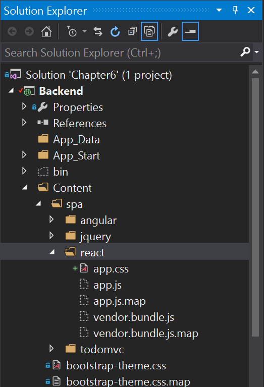
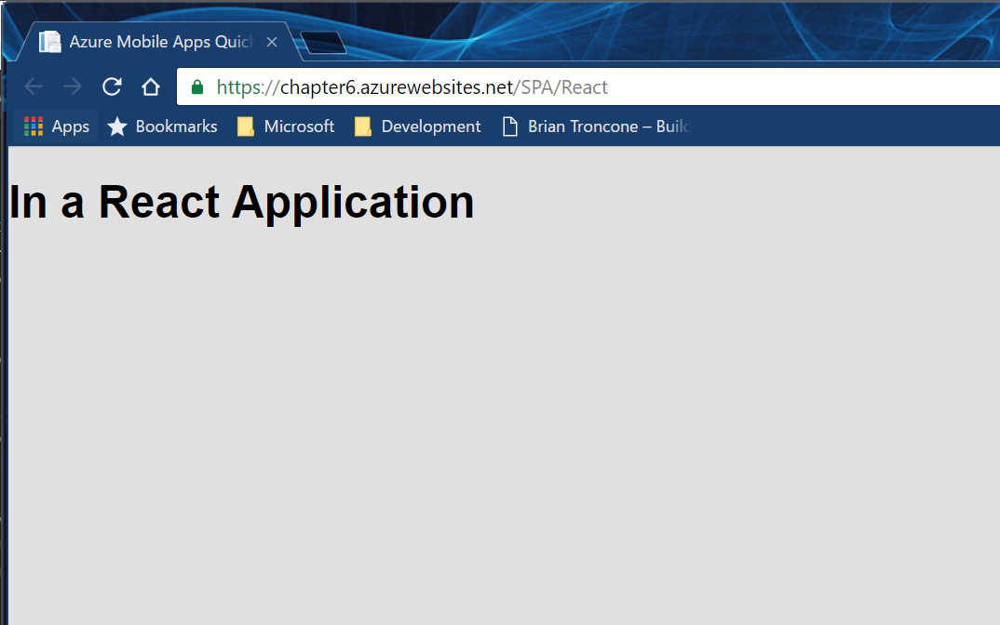

React Applications¶
There have been two major shifts in the way that JavaScript applications are built in the past few years. The first is in the user of transpilers for compiling another variant of JavaScript into something that a browser can use. There are languages that add whole new feature sets to the language, like CoffeeScript, TypeScript and Dart, plus others that extend JavaScript to include unsupported features of the JavaScript language early, like BabelJS which provides access to the latest specifications for JavaScript on the current set of browsers. The process of converting one of these languages into more normal JavaScript is called transpiling. The resultant code is rarely readable.
The other major shift is in the use of bundlers. In prior iterations of the JavaScript language, there was no module
system. Developers included a number of <script> tags to load the code. As JavaScript became more of a development
platform, the size of the code grew and the need for a module system also grew. There are three in general
use - RequireJS, CommonJS and ES2015 modules. In general, developers will use a bundler like
Browserify or Webpack to bundle their application source together so that it loads faster and they can
take care of alternate module specifications like CommonJS and ES2015 modules. (RequireJS doesn't require bundling).
This brings us to React applications. React is a newcomer to the JavaScript framework scene. It provides a component model for your application. It is generally paired with a Flux state manager like Redux. Thus, most React applications can more properly be called React/Redux applications. While React can be used with just straight JavaScript and script tags, it is more normal to use ES2015 syntax and a bundler like Webpack to distribute the application.
Setting Up¶
In this example, we are going to walk through the set up of an application that uses Webpack and the BabelJS transpiler to build our web application into our MVC framework.
MVC Controller & View¶
As with the jQuery and Angular examples, we need a controller (within the Controllers\SPAController.cs file):
public ActionResult React()
{
return View();
}
We also need a suitable View. This is similar in construction to the Angular view, but it requires some different
elements, as is normal when you change a JavaScript framework. This is Views\SPA\React.cshtml:
@{
Layout = null;
}
<!DOCTYPE html>
<html>
<head>
<meta charset="utf-8">
<meta name="viewport" content="width=device-width, initial-scale=1">
<title>Azure Mobile Apps Quickstart</title>
<link rel="stylesheet" href="~/Content/spa/react/app.css" />
</head>
<body>
<div id="app"></div>
<script src="~/Content/spa/react/vendor.bundle.js"></script>
<script src="~/Content/spa/react/app.js"></script>
</body>
</html>
This view is much simpler than the Angular view because none of the markup for the actual application is contained
within the view. All markup is done by the React components in our code. There are three files referenced in this
file that do not yet exist. The JavaScript files will be created by the Webpack bundler, and the app.css file is
the regular CSS file from the normal Quickstart application.
Setting up a Webpack project¶
There is some work to do in order to set up a reasonable Webpack-enabled project. Let's first of all set up a basic
React application in a new directory called ReactClient. Here is the ReactClient\app.jsx file that will serve
as our entry-point into the application:
import React from 'react';
import ReactDOM from 'react-dom';
ReactDOM.render(
<h1>In a React Application</h1>
, document.getElementById('app')
);
Once we have the build correctly done, the application will insert the <h1>In a React Application</h1> inside
the <div id="app"></div> from the main page. This is the most basic of React applications, but we can already
see some things we may not have seen before. The import statements bring in ES2015 modules for use. Also, you
can embed pseudo-HTML into a React application rendering method by using JSX. When the application is
transpiled with BabelJS, this pseudo-HTML get compiled into normal JavaScript.
There are three other files we want to produce that are build related. The first is the .babelrc file. This contains instructions to the BabelJS transpiler that tells it what specifications need to be transpiled:
{
"presets": [ "es2015", "react" ],
"plugins": [
"transform-class-properties",
"transform-object-rest-spread"
]
}
Our application will be written in ES2015 syntax with React extensions (those are presets) and I write with a couple of specifications that may or may not make it into the next JavaScript specification, but are useful - Class Properties and Object Rest Spread. Although these are considered "experimental", they make your life much easier as a developer.
The second file is webpack.config.js. This is a JavaScript file that tells the Webpack system how to build the
application. Here is a suitable file for this application:
'use strict';
/* global __dirname */
var path = require('path'),
webpack = require('webpack');
var configuration = {
devtool: 'source-map',
entry: {
app: [
path.join(__dirname, 'ReactClient/app.jsx')
],
vendor: [
'react',
'react-dom'
]
},
module: {
loaders: [
{ test: /\.jsx?$/, loader: 'babel', exclude: /node_modules/ }
]
},
output: {
path: path.join(__dirname, 'Content/spa/react'),
publicPath: '/',
filename: 'app.js'
},
plugins: [
new webpack.optimize.CommonsChunkPlugin('vendor', 'vendor.bundle.js'),
new webpack.optimize.DedupePlugin()
],
resolve: {
modulesDirectories: [ 'node_modules' ],
extensions: [ '', '.js', '.jsx' ]
},
target: 'web'
};
module.exports = configuration;
There are three areas of the configuration object that are interesting. The entry block contains the entry-point
for the application, but it also contains a vendor array. This array is the list of modules that will be placed into
the vendor.bundle.js file. When we add a new external module, we need to add it to the list so that it is included
in the bundle. The module section contains instructions on how to transpile the source files. The single entry tells
Webpack to run all JavaScript and JSX files through the BabelJS transpiler. Finally, the output section tells
Webpack where to store the output files.
Our final file is package.json. This is a fairly standard file for loading modules from the NPM repository. You can
create one using npm init --yes, then use npm install modulename --save to install the individual modules. Alternatively,
you can create the package.json file and then run npm install to install the modules that are named in the file.
{
"version": "0.0.1",
"name": "react-quickstart",
"private": true,
"main": "ReactClient/app.jsx",
"scripts": {
"build": "webpack -p"
},
"devDependencies": {},
"dependencies": {
"babel-core": "^6.21.0",
"babel-loader": "^6.2.10",
"babel-plugin-transform-class-properties": "^6.19.0",
"babel-plugin-transform-object-rest-spread": "^6.20.2",
"babel-preset-es2015": "^6.18.0",
"babel-preset-react": "^6.16.0",
"react": "^15.4.1",
"react-dom": "^15.4.1",
"webpack": "^1.14.0"
}
}
Run npm install in the Backend directory once you have saved this file. It will download all the modules needed.
Visual Studio Extensions
There are a number of Visual Studio extensions that can assist with this work. Check out the Appendix for more details on these. You should definitely install the NPM Task Runner extension before continuing though.
Both webpack.config.js and package.json should be at the top of the directory tree, in the Backend folder. The
.babeljs file should be in the ReactClient directory.
You should exclude any files that are not going to be distributed from the publication process. This includes all three build files and the contents of the ReactClient directory. Right-click on each object and select Properties.... Set the Build Action to None and the Copy to Output Directory to Do not copy.
Add node_modules to .gitignore
You should ensure you add the node_modules directory to your .gitignore file or it will be checked into source code.
The node_modules is normally very large and you can easily regenerate it by running npm install.
Building the Webpack files automatically¶
If you have installed the NPM Task Runner, you can build the entire JavaScript application within Visual Studio.
Open the Task Runner Explorer (View > Other Windows > Task Runner Explorer). There will be a package.json
section with Defaults and Custom sections within. In the Defaults section, right-click on install and
select Run. This will install all the npm packages you are missing.
The next step is to do the first build. Right-click on build in the Custom section and select Run. This
will generate the vendor.bundle.js and app.js files (plus their map equivalents).
Map Files
Since there is no direct correlation between what is running in the browser and what your source code looks like when using transpilers and bundlers, these tools produce map files. This is a (generally much larger) file that tells the browser what line represents a piece of code in the browser. They are not distributed (nor required) in a production build.
As a one-time activity, we need to add the generated files to the project. In the Solution Explorer, click on the Show All Files button (which is to the left of the spanner icon). Expand Content > spa > react and you will see four files which have dotted icons:

Right-click on each file and select Include in Project. Ensure their Build Action* is set to Content** in the Properties pane.
Assuming all went well, you can now set up the build to happen automatically. Right-click on build in the Custom section, then select Bindings > Before Build. This will generate the files on each build (before the build occurs).
If you publish the project as this point, you will be able to browse to /SPA/React and see the following:

Integrating Azure Mobile Apps¶
There are three parts to adding Azure Mobile Apps to a Redux: the store, the actions and the reducer. The store is a
central part of a redux application and you don't need to do anything special. Here is the ReactClient/redux/store.js
code:
import { createStore, combineReducers, applyMiddleware } from 'redux';
import createLogger from 'redux-logger';
import thunkMiddleware from 'redux-thunk';
import promiseMiddleware from 'redux-promise';
import * as reducers from './reducers';
import * as todoActions from './actions/todo';
const appReducers = combineReducers({ ...reducers });
const reduxStore = applyMiddleware(
thunkMiddleware,
promiseMiddleware,
createLogger()
)(createStore);
export const store = reduxStore(appReducers);
// Dispatch a refresh action
store.dispatch(todoActions.refreshTodoItems());
The only real addition is that we dispatch an action (which initiates a change in the store) when we start up. This
action is for refreshing the content from the mobile backend. Our reducer converts the actions into changes in the
store. This is the ReactClient/reducers/todo.js:
import constants from '../constants';
const initialState = {
todoItems: [],
network: 0,
error: ""
};
export default function todoReducers(state = initialState, action) {
switch (action.type) {
case constants.todo.addItem:
return Object.assign({}, state, {
todoItems: state.todoItems.concat(action.item)
});
case constants.todo.removeItem:
return Object.assign({}, state, {
todoItems: state.todoItems.filter(item => item.id !== action.id)
});
case constants.todo.updateItem:
return Object.assign({}, state, {
todoItems: state.todoItems.map(item => { return (item.id === action.item.id) ? action.item : item; })
});
case constants.todo.replaceItems:
return Object.assign({}, state, {
todoItems: action.items
});
case constants.todo.network:
return Object.assign({}, state, {
network: state.network + action.counter
});
case constants.todo.error:
return Object.assign({}, state, {
error: action.error
});
default:
return state;
}
};
There is no network activity here because all the store changes are being done against a cached copy of the data. You
should not have to go to the cloud to fetch the data, except when refreshing the cache. All the actual network activity
happens inside the ReactClient/actions/todo.js:
import * as WindowsAzure from 'azure-mobile-apps-client';
import constants from '../constants';
const ZUMOAPPURL = location.origin;
const zumoClient = new WindowsAzure.MobileServiceClient(ZUMOAPPURL);
const todoTable = zumoClient.getTable('todoitem');
function networkProcess(counter) {
return {
type: constants.todo.network,
counter: counter
};
}
function zumoError(error) {
return {
type: constants.todo.error,
error: error
};
}
export function addTodoItem(item) {
return (dispatch) => {
dispatch({
type: constants.todo.addItem,
item: item
});
const success = (item) => {
dispatch({
type: constants.todo.updateItem,
item: item
});
};
const failure = (error) => { dispatch(zumoError(error)); };
dispatch(networkProcess(1));
todoTable.insert(item).done(success, failure);
dispatch(networkProcess(-1));
};
}
export function removeTodoItem(id) {
return (dispatch) => {
dispatch({
type: constants.todo.removeItem,
id: id
});
const success = () => {};
const failure = (error) => { dispatch(zumoError(error)); };
dispatch(networkProcess(1));
todoTable.del({ id: id }).done(success, failure);
dispatch(networkProcess(-1));
};
}
export function updateTodoItem(item) {
return (dispatch) => {
dispatch({
type: constants.todo.updateItem,
item: item
});
const success = (item) => {
dispatch({
type: constants.todo.updateItem,
item: item
});
};
const failure = (error) => { dispatch(zumoError(error)); };
dispatch(networkProcess(1));
todoTable.update(item).done(success, failure);
dispatch(networkProcess(-1));
};
}
export function refreshTodoItems() {
return (dispatch) => {
const success = (data) => {
dispatch({
type: constants.todo.replaceItems,
items: data
});
};
const failure = (error) => { dispatch(zumoError(error)); };
dispatch(networkProcess(1));
todoTable.read().then(success, failure);
dispatch(networkProcess(-1));
}
}
Each action that is called by the client code kicks off a call into the standard Azure Mobile Apps JavaScript SDK
to do the relevant change in the mobile backend. When that returns, another action is dispatched to make the change
in the store via the reducer. In addition, we keep track of how many network requests are happening and we also
handle errors via the zumoError() action.
I have not included all the code in this chapter as much of it is fairly standard React/Redux, but it is available
on the GitHub repository for the book. Remember that you will have to update the package.json file and run
npm install to install the additional libraries.
Updating Webpack for Azure Mobile Apps JavaScript SDK¶
The Azure Mobile Apps JavaScript SDK requires an additional loader for Webpack to handle it. Install the json-loader
module using npm install --save json-loader, then add the following to the loaders section of the webpack.config.js:
module: {
loaders: [
{ test: /\.jsx?$/, loader: 'babel', exclude: /node_modules/ },
{ test: /\.json$/, loader: 'json' }
]
},
Once the additional line is added, Webpack will handle the azure-mobile-apps-client without problems.
There is a lot more to be said about the capabilities of React, Redux, BabelJS and Webpack that is beyond the scope of this book. I hope you will take the opportunity to try the vibrant JavaScript community out as you build single page applications.